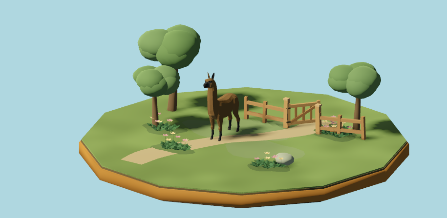
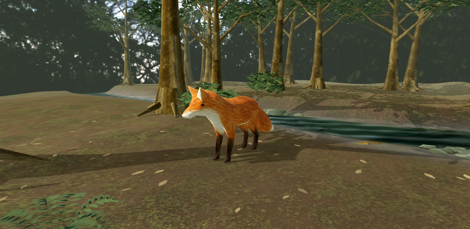
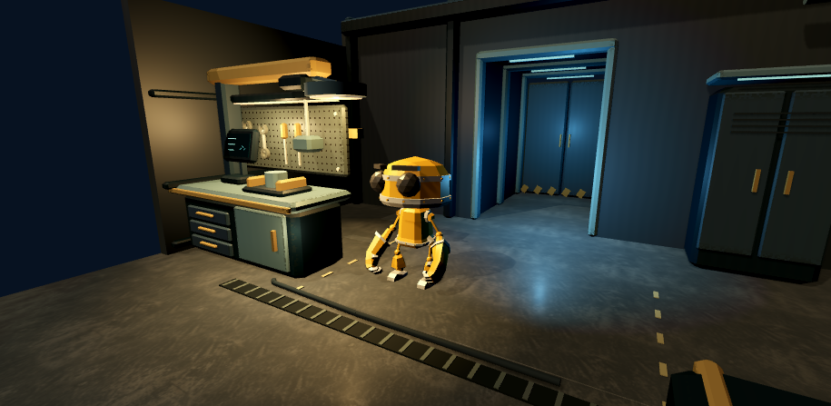

Living diorama
Expressive creature motion, warm materials and playful action cues in a miniature meadow.
Explore this setting →Move through a living meadow, build a settlement, explore a laboratory, or try a different kind of world. Open Edit world to change its settings, apply your ideas, and save a draft.

Compare presentation in the living diorama →Three focused comparison settings complement the playable world gallery.
Expressive creature motion, warm materials and playful action cues in a miniature meadow.
Explore this setting →
Study grounding, movement and restrained feedback in a wooded riverbank clearing.
Explore this setting →
Tune mechanical timing, emissive materials and precise framing in a robot testing bay.
Explore this setting →Actual rendered scenes. Choose a setting to start exploring, then compare your candidate with the reference.
Choose a setting and capability, then compare Reference, Candidate, Reduced, or Stress at the same seed. Replay resets the action so you can inspect the change again.
Presets use bounded JSON for browser save and reload. The Studio needs no account or backend. Read the quick guide and asset credits before exploring.